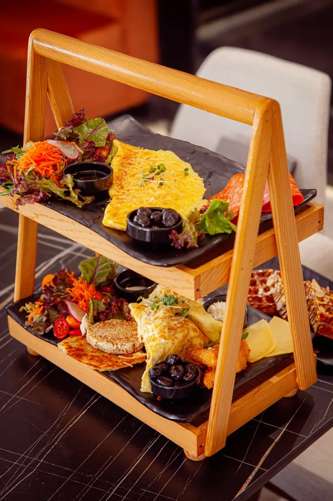

Pour 2 personnesBRUNCH DUO
144 MADPoulet pané, croquettes, croque-maison, omelette au fromage, charcuterie, fromage, pain seigle, beldi (2 mlaoui, 2 harcha), mesclun salade, muffin, gaufre, 2 jus d'orange, 2 boissons chaudes au choix, 2 desserts et 2 eaux minérales.